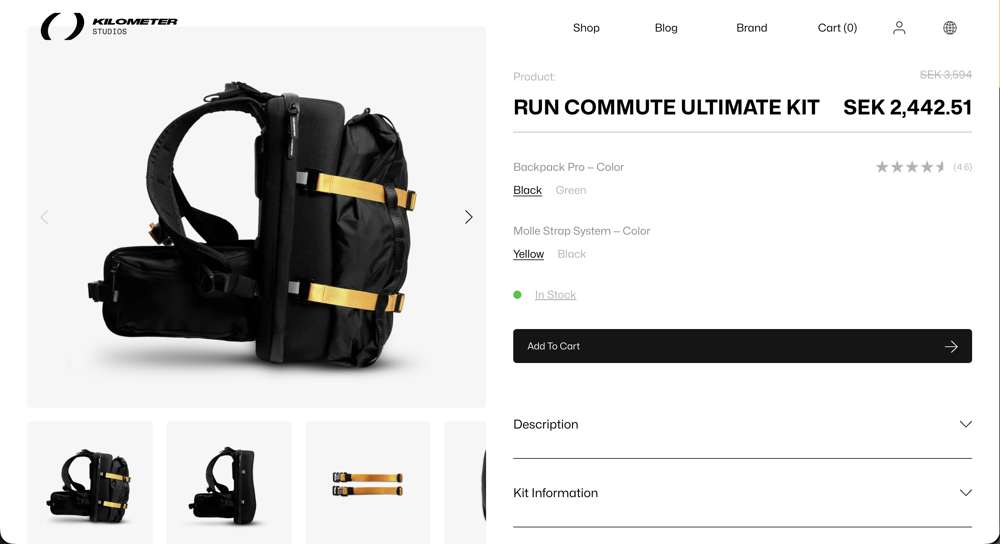
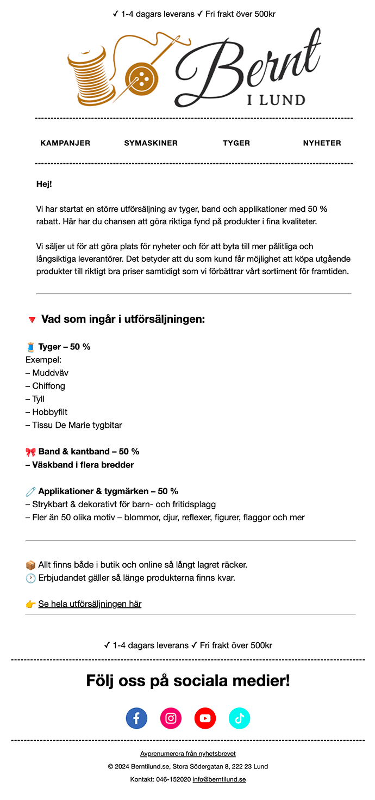

Utvecklingen av produktsida
I samband med rebrandingen från IAMRUNBOX till Kilometer Studios
var jag med och tog fram en ny produktsida från grunden. Det var en spännande fas där mycket handlade
om att översätta ett nytt varumärke och en ny riktning till en tydlig digital upplevelse.
Jag arbetade med allt från design och struktur till hur produkter presenterades och paketerades i bundles.
För mig var det viktigt att sidan inte bara speglade den nya visuella identiteten,
utan också gjorde det enkelt för kunden att förstå erbjudandet och hitta rätt.

Email Marketing
På Bernt i Lund fick jag möjlighet att ta ett större grepp om e-mailmarknadsföringen och vara med och utveckla kanalen mer strukturerat.
Jag tog initiativ till både design och innehåll i utskick och arbetade löpande med A/B-tester för att förstå vad som engagerade mottagarna och gav bäst resultat.
En viktig del var att bygga upp en stabil tillväxt av prenumeranter. Där jobbade jag med pop-ups på hemsidan, tydligare nyhetsbrevsflöden och kampanjer via sociala medier för att nå nya målgrupper och driva fler registreringar.
Det gjorde att e-maillistan växte och att vi kunde arbeta mer kontinuerligt med kanalen.
